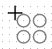
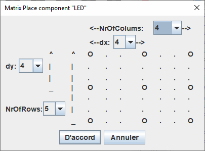

Placing components in a matrix
In Logisim-evolution it is possible to place matrix components on your schematic. To do so, proceed as follows:
Select the desired tool in the navigation panel for example the LED, and move it on the work surface and before clicking to drop it press the X key . The shadow of the component will turn into a small 2 by 2 matrix of the component.

Click on the top left of the position where you want to place the future matrix. And fill in the form data. For example: 4x5 elements with a space of 4.

If self-labeling is enabled, components will be labeled as _X_Y, Example: Led_X1_Y0Next:Logisim User Guide.